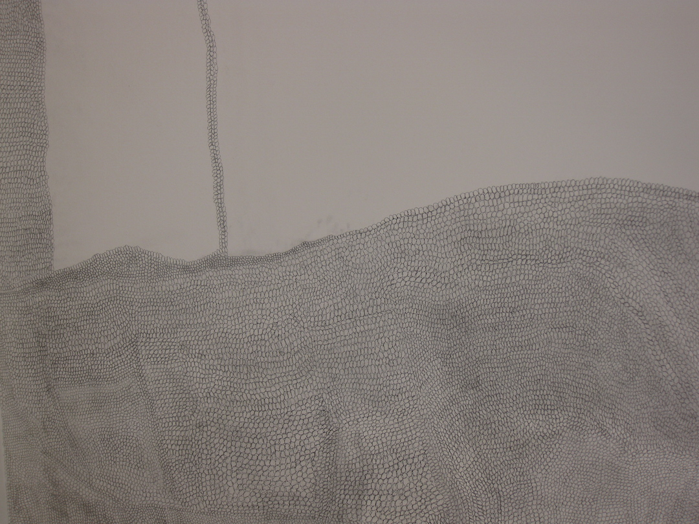

Following on from the residency, I continued to collaborate with Stefano, Marina and Tankboys to do a one night performance at Stationers Hall. The performance piece was inspired by my wall drawing. I wanted to recreate the sonic, repetitive atmosphere, I was drawn to when I created the wall drawing. Calasetta Calling was a 3 hour durational performance.

Untitled, Calasetta Calling, Wall Drawing detail, July 2013
When I created this piece, I was very much drawn to the sound of the pencil marking the wall.
Untitled, Calasetta Calling, Wall Drawing detail, July 2013
Following on from the residency, I continued to collaborate with Stefano, Marina, Tankboys and ... to do a one night performance at Stationers Hall. The performance piece was inspired by my wall drawing. I wanted to recreate the sonic, repetitive atmosphere, I was drawn to when I created the wall drawing. Calasetta Calling was a 3 hour durational performance.
Untitled, Calasetta Calling, Wall Drawing detail, July 2013